| Date | Number | Title |
|---|---|---|
| December 27, 2020, 10:40 AM PST | 1030 | [OK] Clear confirmed cases from 10/19 onward |
| December 18, 2020, 2:40 PM PST | 1018 | [OK] Backfill 12/16-12/17 Cur. hosp + cur. icu |
| September 2, 2020, 10:49 PM PDT | 809 | [OK] Removing negative serology/antibody calculation & adding total and positive antibody values for 5/15-5/21 |
| July 31, 2020, 7:03 PM PDT | 720 | [OK] PCL Cases Backfill |
| July 29, 2020, 7:40 AM PDT | 694 | [OK] Incorrect ICU Value on 7/28 |
| July 23, 2020, 1:48 PM PDT | 663 | [OK] Page updated after Pub Shift 7/21 |
| July 15, 2020, 4:18 PM PDT | 637 | [OK] Positive Cases (PCR) is wrong for 6/13 and 6/14 |
| July 15, 2020, 11:13 AM PDT | 634 | [OK] 6/28 Incorrect Total Cases |
| June 25, 2020, 7:59 AM PDT | 534 | [OK] PCL Historicals and WS2 |
| June 19, 2020, 2:44 PM PDT | 506 | [OK] 6/18 publish missed the daily update |
| March 27, 2020, 12:48 PM PDT | 68 | OK: Negative test results note |
#1030: [OK] Clear confirmed cases from 10/19 onward
Issue number 1030
karaschechtman opened this issue on December 27, 2020, 10:40 AM PST
Labels Data quality
State or US: OK
Describe the problem On September 8, 2020, OK announced that it would transition to counting both confirmed and probable cases, instead of just confirmed cases. This change appears to have taken effect on October 19, 2020, when OK stopped calling its cases "confirmed positive cases" in press releases, as it had before, switching the wording to "cases." We should clear the confirmed cases field from 10/19 onward.
Comments
#1018: [OK] Backfill 12/16-12/17 Cur. hosp + cur. icu
Issue number 1018
hmhoffman opened this issue on December 18, 2020, 2:40 PM PST
State: OK
Dates affected: 12/16/2020-12/17/2020
Describe the issue: On December 16, 2020, Oklahoma stopped reporting people under investigation currently hospitalized. To allow our data quality team time to investigate, we did not update their Currently hospitalized or Currently in ICU on December 16, 2020 through December 17, 2020. We have decided to continue reporting their hospitalization numbers from executive order reports, including only confirmed cases and are applying this change retroactively through December 16, 2020.
Comments
BEFORE: 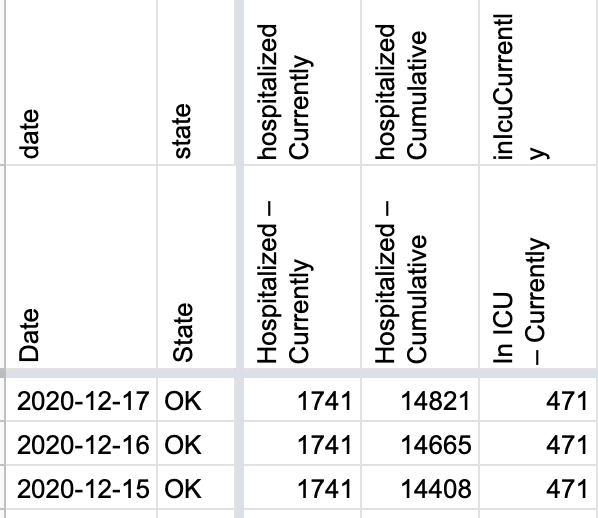
AFTER: 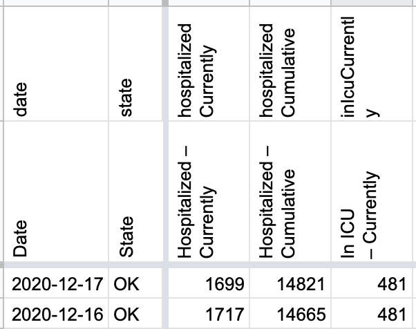
#809: [OK] Removing negative serology/antibody calculation & adding total and positive antibody values for 5/15-5/21
Issue number 809
jaclyde opened this issue on September 2, 2020, 10:49 PM PDT
Labels Data quality Historical Data
State: OK
Describe the problem: CTP started calculating negative serology tests on 5/22/2020 based on OK's Total antibody tests - Positive antibody tests. We are removing this metric.
While verifying that the metric was always calculated, we realized that OK started reporting Total and Positive Antibody a week before CTP started recording it. Backfilling that week (the values only update weekly) from the May 8-May 14 Weekly Epidemiology and Surveillance Report. Source: 2020.05.15_weekly_epi_report.pdf
Comments
BEFORE: 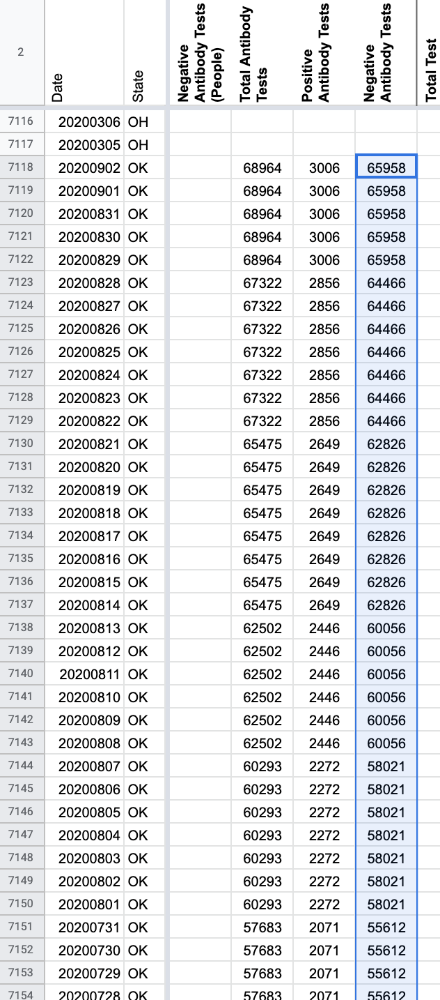
AFTER: 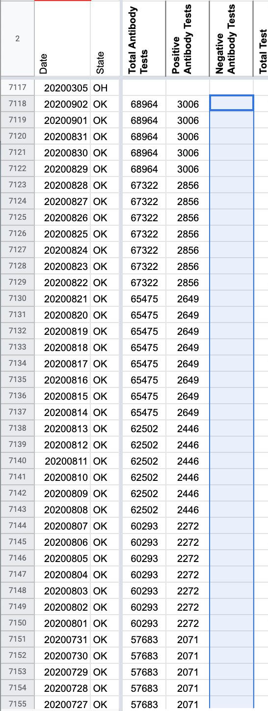
Values: 65958 65958 65958 65958 65958 64466 64466 64466 64466 64466 64466 64466 62826 62826 62826 62826 62826 62826 62826 62826 60056 60056 60056 60056 60056 60056 58021 58021 58021 58021 58021 58021 58021 55612 55612 55612 55612 55612 55612 55612 53331 53331 53331 53331 53331 53331 53331 47880 47880 47880 47880 47880 47880 47880 43548 43548 43548 43548 33319 33319 33319 33319 33319 33319 33319 33319 33319 33319 28963 28963 28963 28963 28963 28963 28963 26441 26441 26441 26441 26441 26441 26441 26441 22539 22539 22539 22539 22539 22539 22539 19532 19532 19532 19532 19532 19532 19532 16532 16532 16532 16532 16532 16532 13183
BEFORE: 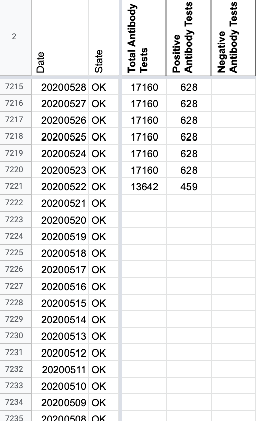
AFTER: 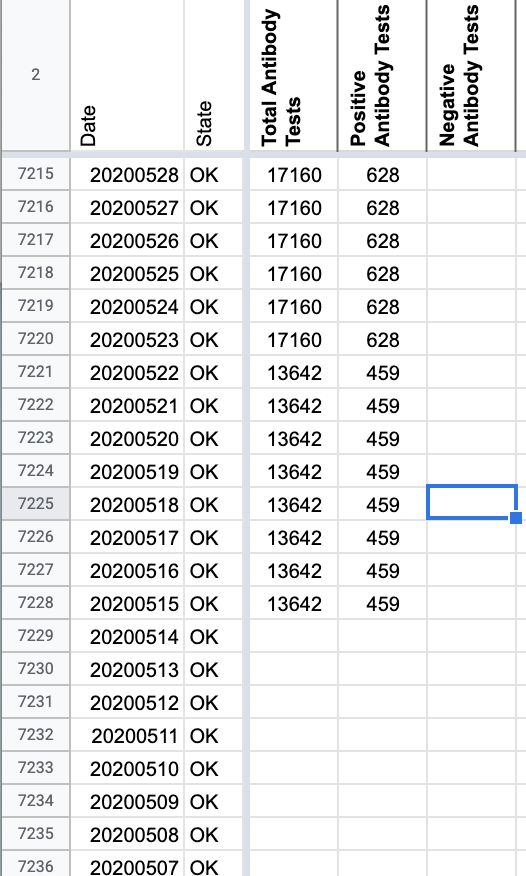
This issue has been automatically marked as stale because it has not had recent activity. It will be closed if no further activity occurs. Thank you for your contributions!
This issue has been closed because it was stale for 15 days, and there was no further activity on it for 10 days. You can feel free to re-open it if the issue is important, and label it as "not stale."
This was completed. I just forgot to close the issue.
#720: [OK] PCL Cases Backfill
Issue number 720
hmhoffman opened this issue on July 31, 2020, 7:03 PM PDT
Labels Backfill Historical Data not stale
Describe the Issue: We didn't start recording pos. pcr cases for OK until 6/9. EORs from previous dates have a case number which is defined as "*Case: Meets confirmatory laboratory evidence.". We can use this figure to backfill historical pcr cases up to 4/14 when they added to clear definition for the number.
Data Source: https://coronavirus.health.ok.gov/executive-order-reports
Comments
On 4/13, there is a note that the total includes 5 probable cases. Perhaps we could just subtract 5 from the total positives to account for that, but I suppose it doesn't quite say explicitly that all the other cases are confirmed.
Before (point where Positive Cases (PCR) stopped): 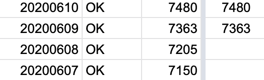
After (new point where Positive Cases (PCR) stops): 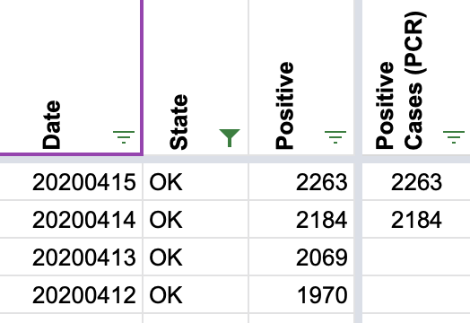
#694: [OK] Incorrect ICU Value on 7/28
Issue number 694
the-daniel-lin opened this issue on July 29, 2020, 7:40 AM PDT
Labels Data quality
State or US: Oklahoma
Describe the problem We reported 307 (285+22) for curr. ICU value instead of 207 (185+22)
Link to data source

Comments
Before: 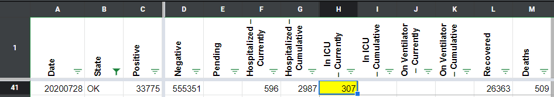
After: 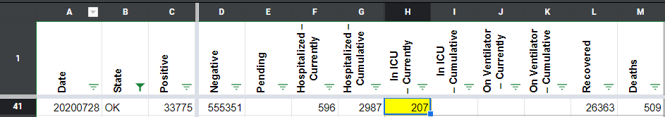
#663: [OK] Page updated after Pub Shift 7/21
Issue number 663
hmhoffman opened this issue on July 23, 2020, 1:48 PM PDT
Describe Issue On 7/21 the OK page did not update before we published. They updated later that evening and we caught it in our last screenshot. We need to patch cases, deaths, and recoveries.
Data Source
Screenshot from 6:21 pm on 6/21

Comments
BEFORE: 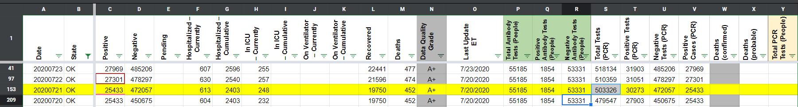
Noticed that there were three consecutive 7/20's, and they had updated values for each. Changed them to 7/20, 7/21, 7/22, accordingly.
AFTER: 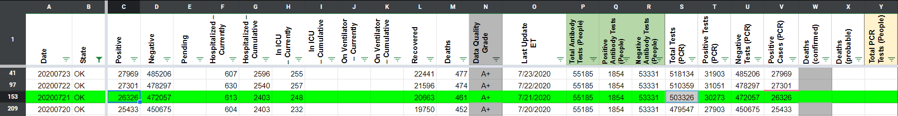
#637: [OK] Positive Cases (PCR) is wrong for 6/13 and 6/14
Issue number 637
MattHilliard opened this issue on July 15, 2020, 4:18 PM PDT
Labels Data quality
State or US: OK
Describe the problem
For OK, we use the same dashboard number to populate both Positives and Positive Cases (PCR). Accordingly, the numbers are the same for each day...except for 6/13 and 6/14. 6/13 repeats the value for 6/12 and 6/14 has the value that should be in 6/13. Not sure how this happened but OK screenshots agree with our Positives column.
Link to data source https://covidtracking.com/screenshots/OK/OK-20200613-184553.png https://covidtracking.com/screenshots/OK/OK-20200614-184350.png
Comments
Before: 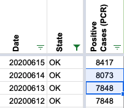
After: 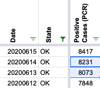
#634: [OK] 6/28 Incorrect Total Cases
Issue number 634
schmian opened this issue on July 15, 2020, 11:13 AM PDT
Labels Historical Data
"Hello and thank you for the service you are doing. I spend a lot of time every day on your site while doing about 10 hours of research daily on the pandemic.
I noticed a small error, probably a typo, in the Oklahoma data for yesterday 28 June. The State reported 302 new cases and 12,944 total cases. The numbers are listed as 352 and 12,994 respectively in your Oklahoma listing."
This can also be confirmed in the screenshots from 6/28: https://covidtracking.com/screenshots/OK/OK-20200628-184700.png
Comments
Agree it looks like a simple typo, 12994 instead of 12944.
Before: 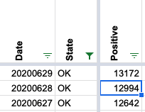
After: 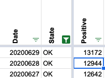
I also notice that our "Positive Cases (PCR)" column was not changed that day even though it otherwise tracks OK positives exactly. I believe this was an oversight and so corrected this as well:
Before: 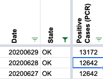
After:

#534: [OK] PCL Historicals and WS2
Issue number 534
the-daniel-lin opened this issue on June 25, 2020, 7:59 AM PDT
Labels PCL/SVP Historicals
Death values are historically recorded in both the "Deaths" and "Deaths (Confirmed)" columns for OK. However, OK's death values represent lumped probable and confirmed figures, so they should only be recorded in the main "Deaths" field.
Comments
Removed from Deaths (confirmed). The values matched Deaths from today back to when these started getting recorded so this screenshot is just evidence of when that was (spoiler: 5/12): 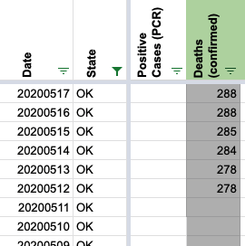
DZL is DCing this - 6/26 9:57
#506: [OK] 6/18 publish missed the daily update
Issue number 506
muamichali opened this issue on June 19, 2020, 2:44 PM PDT
Labels Data quality
Oklahoma
Front Issue Your most recent data for Oklahoma shows Thursday June 18 the total cases were 8,904 which is the same number as Wednesday for positive cases. However, the State Dept. of Health is showing a 450 jump in cases with a total of 9354 cases.
Link to data source https://covidtracking.com/screenshots/OK/OK-20200618-184250.png
Comments
Oklahoma's executive order report for 6/18 has the correct numbers. This looks like a state where we are typically off by one day for hospitalization and testing information...that data in the report matches what we have for 6/19, whereas 6/18 has distinct values from 6/17 for testing and hospitalization numbers. For now I'm leaving those as-is; fixing that without screwing up people's trend analysis would mean a re-sync of all OK historicals (after which we'd once more be off a day going forward).
The more important issue here is we didn't get an updated number for cases, recovered, and deaths on 6/18 but did get updated numbers for hospitalizations and tests. Therefore I'm patching in the executive order numbers for positives, recovered, and deaths.
Before:

After: 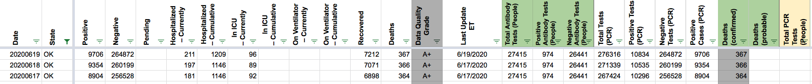
#68: OK: Negative test results note
Issue number 68
lesleemoore opened this issue on March 27, 2020, 12:48 PM PDT
Labels State Notes stale
Please note the comment on https://coronavirus.health.ok.gov/,
"*Negative testing results are only from the State Public Health Laboratory and do not include private laboratory negative results."
Comments
Oklahoma State Department of Health is trying to get negative test results:
🤞
This issue has been automatically marked as stale because it has not had recent activity. It will be closed if no further activity occurs. Thank you for your contributions!
Late update but as of now OK is reporting results from both public and private labs in their daily executive orders. This data has been captured.
Changes.txt